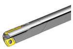

Ein Unternehmen existiert, um Probleme für den Kunden zu lösen. Gelingt das, würdigt der Kunde es mit Anerkennung — manchmal in Form bezahlter Rechnungen, manchmal mit einer Empfehlung.
Daher ist es sinnvoll, sich immer die Frage zu stellen: „Welches Problem löst unser Handeln für unseren Kunden?" — denn das ist Wertschöpfung und damit echte Arbeit. Alles andere ist entweder notwendiges Übel oder schlicht Beschäftigung und damit Verschwendung.
Lasst uns die relevanten Probleme gemeinsam lösen. Eine entscheidende Rolle übernimmt dabei die Führungs-Kraft. Aber wer oder was ist das eigentlich?
Viele Modelle in diesem Heft sind angelehnt — oder sogar 1 : 1 übernommen — von großartigen Vordenkern. Einige sollen genannt sein: Dr. Gerhard Wohland, Benno Löffler, Mark Poppenborg und Lars Vollmer. Soweit möglich haben wir Quellen und Bücher verlinkt. Oft sind es aber auch Gedanken, die zu weiteren Überlegungen geführt haben — Danke dafür, so oder so.
Es sind genug Probleme für jeden da!
Jeden Tag werden wir als Firma mit „nicht schadlos ignorierbaren Ereignissen" konfrontiert. Nennen wir sie Probleme. Wie geht eine Organisation eigentlich mit diesen Ereignissen um?
Ein Versuch, diesen Prozess zu visualisieren, ist unser Problemlösungs-Kreislauf. Was im Einzelnen nacheinander abläuft, erklären wir auf den folgenden Stationen.
Es zeigt sich in vielerlei Gestalt: ein Kundenauftrag, eine Entwicklung am Absatzmarkt, eine Pandemie, eine Störung in der Produktion, notwendige Produktivitätssteigerung — usw.
Die erste Frage ist, ob das Problem bearbeitungswürdig ist. Erstaunlicherweise ist es viel schwieriger, sich gegen Probleme zu entscheiden. Die Versuchung, alles angehen zu wollen, ist groß — Defokussierung das Ergebnis. Die Leistung dieses Schrittes ist Selektion.
Das Problem ist verstanden und kann nicht ignoriert werden. Aber was tun? Welche Handlungsoptionen gibt es? Hat jemand eine Idee, eine Hypothese oder gar den starken Drang, etwas zu unternehmen? Gleichzeitig geht es darum, ein kollektives Gefühl für das Problem zu entwickeln.
Welches Tor darf es sein? Wichtig ist nur, dass sich für eines entschieden wird. Die Alternative ist der Status quo. Nicht-Entscheiden ist unmöglich — denn das ist immer die Entscheidung dafür, dass alles so bleibt, wie es ist.
Nun geht's ans Machen. Das Entschiedene wird umgesetzt.
Ist der Kunde zufrieden? Es geht nicht darum, ihm alle Wünsche von den Lippen abzulesen. Aber wir sind angetreten, das ursprüngliche Problem zu lösen. Ist das der Fall, gilt es als gelöst. Genügt es noch nicht — umso besser: Der Kreis beginnt von Neuem.
Werden Probleme gelöst, wird der Kreis immer durchlaufen. Manchmal sehr schnell — innerhalb weniger Minuten werden Probleme erkannt, angenommen, diskutiert, entschieden, umgesetzt und am Ende freudig als erledigt festgestellt.
Manchmal ist es aber erstaunlich zäh. Diskussionen ziehen sich wie Kaugummi, alle sind sich einig, dass jemand etwas tun müsste, es gibt sogar klare Meinungen. Aber es passiert — NICHTS! Woran liegt das? Halte nach folgenden Hürden Ausschau, die den Kreislauf bremsen.
Wann ist ein Problem WIRKLICH relevant? Wer oder was entscheidet darüber?
Wenn Wertschöpfung wirklich nur Problemlösung für den Kunden ist — ist Zeit für anderes dann Verschwendung? Oft sieht man sich mit Vorgaben und Arbeitsanweisungen konfrontiert, die intern referenziert sind: nicht dem Kunden, sondern der Vorgabe dienend. Das gilt es kritisch zu hinterfragen.
Macht wird per Stellung erteilt und funktioniert über das Machtgefälle — wer kann wem mehr Schaden zufügen. Oft sinnvoll: immer dann, wenn der Wissensvorsprung beim Mächtigen liegt. Das gibt der Organisation Geschwindigkeit im Durchlauf.
Macht hat nur einen Haken — die Gefahr, dass die Stelle mit der Person verwechselt wird. Dann steigt das Machtgefühl zu Kopfe. Was bekanntermaßen keinem gut tut.
Begegnet man hochdynamischen (roten) Problemen mit eher blauen Lösungsansätzen, nennen wir das die „blaue Falle". Prozesstheater, Heuchelei und fehlende Anpassungsfähigkeit sind die Folge.
Verwendet man für niederkomplexe (blaue) Probleme immer wieder rote Improvisation, ist das ineffizient — die „rote Falle".
Ein Problem kommt unschuldig ums Eck. Klein, abgegrenzt — eine Lösung scheint realistisch. Nun werden weitere Disziplinen hinzugezogen, Interessensgruppen steigen ein, Aspekte und Szenarien werden beschrieben. Bis man sich umschaut, wurde aus dem kleinen Problem das Endmonster — als würde man im Computerspiel nach dem Intro direkt gegen den Endgegner antreten.
Frust, Resignation und am Ende Kapitulation sind zu erwarten.
Ist es nicht schön, wenn sich alle einig sind? Blöd nur bei unterschiedlichen Meinungen. Gepaart mit dem Anspruch, per Mehrheit zu entscheiden, finden wir uns oft in nicht enden wollenden Diskussionsschleifen. Argumente werden bis zur Erschöpfung wiederholt — obwohl der Punkt längst verstanden war. Das ist die Konsensfalle.
Ähnlich am Stammtisch: Man trifft sich, Meinungen werden ausgetauscht, ein Monolog reiht sich an den nächsten. Aber ohne Verantwortung oder Umsetzungsmöglichkeit bleibt es beim Treffen und Sprechen — eine Entscheidung oder Handlung leitet sich nicht ab.
Teams, die Verantwortung übernehmen, wünscht sich jeder. Bis zu dem Punkt, an dem Lösungswege getrieben werden, die nicht zur eigenen Vorstellung passen. Nun zeigt sich, ob es genug Autonomiegrad gibt — oder anders: „Behält der Vorgesetzte die Nerven?" Wird über Macht der präferierte Weg erzwungen, ist auch die Verantwortung nicht mehr für das Team verfügbar.
JEDER ist motiviert, bis er lang genug vom System demotiviert wurde!
Lange galt das Narrativ, Menschen müssten extrinsisch motiviert werden. Das ist widerlegt. Vielmehr hilft die Haltung, dass jeder Mensch Probleme lösen und seinen Beitrag leisten will. Beobachtet man Menschen ohne Lust mitzuhelfen, lohnt die Suche nach den Gründen, wie es so weit kommen konnte.
Unterschätze niemals den sozialen Druck der Meinung von Mächtigen. Am Ende ist es nur logisch, dass man gefallen will. Eine gute Idee sollte keine Hierarchie kennen!
Wertschöpfung ist das, was der Kunde bezahlt.
Wird Wertschöpfung versehentlich unterlassen, bemerkt der Kunde das und beklagt sich bitterlich. Wird unnötiger Schnickschnack unterlassen, ist es ihm gleichgültig — denn er bemerkt es gar nicht.

Zentrum = Arbeit am System FÜR den Kapitalgeber / die langfristige Zukunft der Organisation.
Peripherie = Arbeit im System FÜR den Markt / den Kunden, der die Rechnungen zahlt.
Es sind keine Menschen oder Räume, sondern beobachtbare Rollen, die gefüllt werden müssen.
Steuern funktioniert durch Macht und Gehorsam.
Führung funktioniert durch Ansehen und freiwillige Gefolgschaft.
Es gibt kein gut oder schlecht, kein neu oder alt. Es geht darum zu erkennen, welcher Mechanismus in welcher Situation dienlich oder hinderlich ist.
Stark trivialisiert: Nur wer sich wohl und sicher fühlt, hört auf zu taktieren und agiert frei — was auch beherztes Streiten in der Sache bedeuten darf. In vielen Organisationen ist das aber nicht der Fall.
Es ist unsicher, ob man etwas zu befürchten hat. Es herrscht Misstrauen — aus gutem Grund. Da ist es logisch, dass Menschen vorsichtig werden und sich zurücknehmen, egal ob sie einen guten Einwand, eine Idee oder gar eine Warnung im Kopf hätten.
Vertrauen und gefühlte psychologische Sicherheit ist ein wirtschaftlich relevantes Gruppenphänomen.
Ein Team entwickelt Ideen und Handlungsoptionen, ein Gremium entscheidet, was getan wird. Das können, müssen aber nicht dieselben Personen sein.
Manchmal liegt sogar in unterschiedlichen Besetzungen der Schlüssel, um im Kreislauf weiterzukommen.
Liegt Wissen zum Problem vor, wurde es aber trotzdem falsch gemacht, ist das ein Fehler. Ist die Situation neu und noch nie dagewesen, ist ein Irrtum die Enttäuschung einer intelligenten Annahme.
Bei hochdynamischer Ausgangslage kann es kein Wissen geben. Dann ist die Forderung nach einem Plan Unsinn — man muss inkrementell und experimentell vorgehen. So lernt eine Organisation und erlangt Können.
Der Kontext prägt das Verhalten eines Menschen viel mehr als Psyche, Typ oder Wertesystem. Auf einer Beerdigung, einem Fußballspiel und in einer Sauna beobachtet man tendenziell unterschiedliches, jeweils angepasstes Verhalten derselben Menschen.
Daher ist es viel wirksamer, am Kontext statt an den Menschen zu arbeiten!
Auch wenn Sicherheit, Verantwortlichkeit und freiwilliges Engagement von nicht kausal beeinflussbaren Gefühlen getragen werden — es gibt Strukturen, die diese Phänomene begünstigen.
So schafft es SCRUM, eine Gewaltenteilung zu erzeugen und Übergriffigkeit unwahrscheinlicher zu machen. Oder ein OPEN SPACE den Spirit von Aufbruch und freiwilliger Problemlösung.
Es geht um Kommunikation — den Fluss von Informationen. Doch es lohnt, genauer hinzuschauen.
Fließt mit der Information auch die Verantwortung, nennen wir das Reporting. Werden Informationen öffentlich gemacht, um zu lernen, nennen wir das Transparenz.
Dient der Informationsfluss dem Sicherheitsbedürfnis eines Vorgesetzten, ist es Reporting — mit wahrscheinlich wenig wertschöpfungsrelevantem Effekt. Stellt jemand Informationen bereit, um zu lernen oder anderen Lernen zu ermöglichen, ist es Transparenz. Eine tolle Zutat für lernende Organisationen!
1. Die Vorbereitung — Ein Vorschlag ist die Grundlage: Festlegung eines Moderators, Dokumentation der Vorschläge. Danach wird in einer Runde erfragt, ob alle dasselbe Verständnis vom Vorschlag haben.
2. Erster Durchgang
Daumen hoch · „Ja, ich bin dabei!"
Daumen zur Seite · „Ja, ich bin dabei, habe aber Bedenken — die bitte gehört werden."
Daumen runter · „Nein, ich bin nicht dabei, denn ich habe folgende schwere Bedenken."
Faust · Veto · Der Vorschlag geht so gar nicht, ich wende Schaden ab. ABER nun muss ich einen Lösungsvorschlag machen.
Folgende Formate können helfen, den Kontext zu verändern:
Ein System hat ein Immunsystem: Kulturfremdes Vorgehen wird unterdrückt, denn es stört das operative Geschäft. Soll eine lokal andere Vorgehensweise ein Experiment sein, muss dieses vor dem (Immun-)System geschützt werden. Das geht z. B. mit einem Schutzraum, der lokale Ausnahmen legitimiert.
Achtung Falle: Ein erfolgreiches Schutzraum-Projekt kann man nicht in die Organisation „ausrollen" — es ist ein lokales Phänomen.
1. Vorbereitung — Ein Moderator wird organisiert; man lädt die Menschen ein, von denen man lernen kann.
2. Das Review
3. Nach dem Review — Das Team entscheidet (alleine), welche Elemente übernommen werden.
1. Vorbereitung — Ein Moderator wird organisiert.
2. Die Retro
3. Nach der Retro — Das Team verändert den Modus konkret.
Achtung: Keine DU-Aussagen! (musst / solltest / bist / kannst nicht …)
Feedback richtet sich auf die eigene Wahrnehmung und auf den eigenen Wunsch. Niemand wird belehrt — und niemand bekommt einen Befehl.
Alles bisher Gesagte ist viel zu viel für den Montagmorgen. Hier die Kurzfassung: was du als botek-Führungskraft tunlichst lassen solltest — und was du dafür tun kannst. Keine Regel. Eine Orientierung.
Diese Listen sind kein Gesetzbuch. Sie sind ein Spiegel: Lies sie alle drei Monate noch einmal durch und frag dich, an welcher Stelle du aktuell hängst. Das ist der nächste Hebel.
Seit Jahrzehnten teilen wir bei botek Präzisionsbohrtechnik unser Wissen über tiefes Bohren erfolgreich mit unseren Kunden weltweit. Was im Werkstoff funktioniert, gilt auch in der Organisation: gerade, präzise und mit dem richtigen Schnitt.
2025 haben wir uns als Firma vorgenommen, die Transformation von Führung & Zusammenarbeit bewusst zu gestalten. Wir haben bereits einen spannenden Weg mit vielen Veränderungen zurückgelegt — und haben gleichzeitig noch ein ganzes Stück vor uns.
Nachdem unser Angebot an Schulungen, Workshops und Events stetig gewachsen ist, haben wir 2026 offiziell die botek Akademie gegründet — als Heimat für alles, was wir lernen und weitergeben wollen.
Erscheinungsjahr 2026 // 1. Auflage // Copyright botek Präzisionsbohrtechnik GmbH · Alle Rechte, insbesondere das Recht auf Vervielfältigung und Verbreitung sowie der Übersetzung, vorbehalten. · Entwurf in Anlehnung an „So denken wir Führungskräfte bei Herding" der Herding Akademie.